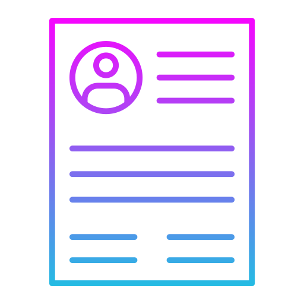

Start by filling in your basic information like name, email, location, and your professional headline. These core details appear at the top of your resume and create your first impression. This section also sets the tone for your resume layout.
Select and add blocks such as Education, Work Experience, Achievements, Skills, Projects, or even Languages. Customize each block to highlight your strengths and tell your story. You can add multiple entries per section or remove them with a click.
Once you're satisfied, simply hit the Generate Resume button! Your personalized resume will be instantly converted into a professional-looking PDF file — ready to download, print, or share. No watermarks. No hassle
